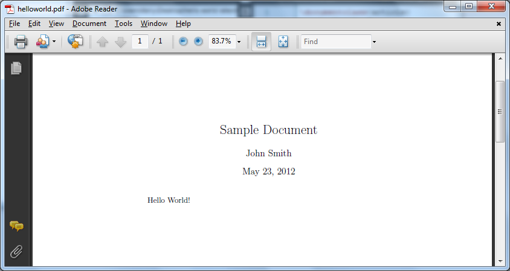

Contents
This guide is separated into three parts:Intended Audience
You are on a Windows system (Windows 7 is assumed, but similar instructions should work for other versions of Windows), and you have some LaTeX source code, like the following:
\documentclass{article}
\title{Sample Document}
\author{John Smith}
\date{May 23, 2012}
\begin{document}
\maketitle
Hello World!
\end{document}
You want to turn it into a PDF document, which should look like this:

This manual will walk you through the minimal necessary steps, using TeX Live as a LaTeX compiler and Texmaker as a LaTeX GUI editor.